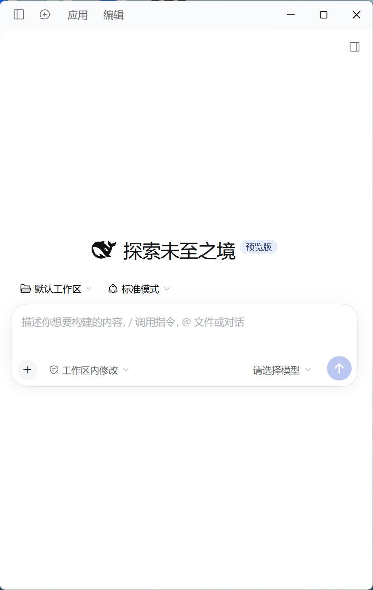
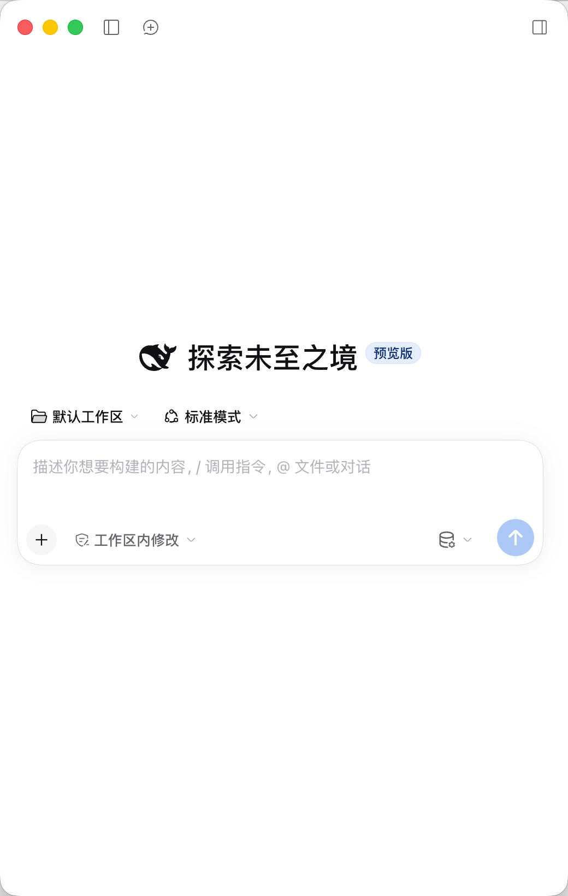

桌面版收起的是左侧那一列，顶部操作按钮仍保留。Windows 与 macOS 的入口，分别这样放置。


Electron 开启标题栏覆盖，保留右上角系统按钮；React 侧栏按钮固定在顶部，并设为可点击区域。
titleBarStyle: 'hidden' + titleBarOverlay
position: fixed; -webkit-app-region: no-drag;侧栏隐藏时，框架通过 shell.leading 顶部插槽放置按钮，并预留交通灯空间。
macOS 低于 768px 可切抽屉；Windows 标题栏窗口不切抽屉。